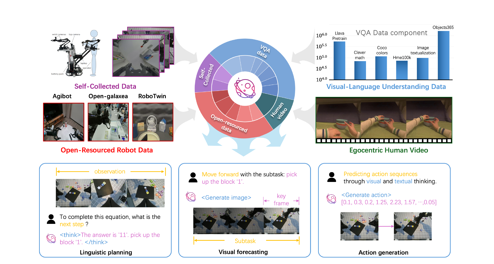
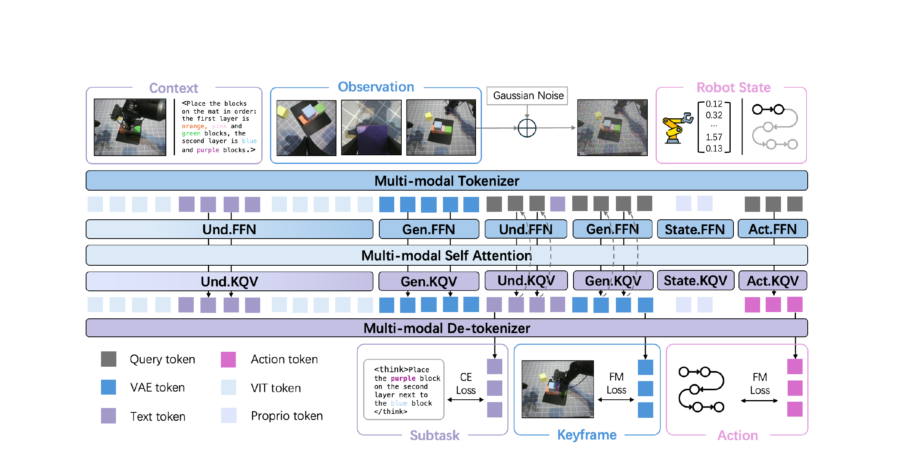

BagelVLA: Enhancing Long-Horizon Manipulation via Interleaved Vision-Language-Action Generation
总览 · 论文五问
2 分钟建立全局：BagelVLA 想让机器人做长程操作时能像人一样"想清楚下一步 → 想象做完的样子 → 再动手"， 并且把这三件事交织（interleave）在同一个模型里，而不是拼三个独立模块。下面用五问 + 数据交代把来龙去脉说清。
| ① 背景 | 通用操作机器人需要三种能力：理解指令该干嘛、预测做完会怎样、执行动作。长程任务（如"按 红→黄→蓝→绿 顺序堆积木"）里，一句全局指令背后隐含一条多阶段因果链——传统 VLA 直接 指令→动作 黑箱映射学不动这条链。 |
| ② 基于什么 | 从 Bagel（字节的统一"理解+生成"多模态模型，单 transformer 用 MoT 同时读+生成文本和图像）初始化；理解/生成专家用 Qwen2.5-LLM-7B 架构；视觉编码 SigLIP2（理解）+ FLUX VAE（生成）；动作用 Flow Matching。 |
| ③ 前人缺陷 | 现有 VLA 要么只做语言规划（缺视觉预测）、要么只做视觉预测（缺逻辑推理），把它们当孤立模块；视频预测派（VPP、Cosmos Policy）没有专门 VLM backbone，复杂推理任务指令跟随差；离散/连续动作派都忽略了 VLM 预训练与 VLA 微调间的对齐鸿沟，微调后多模态能力退化。 |
| ④ 核心 insight | 不只让模型说出下一个文本子任务，还强制它补上“做完这一步的关键帧”，再让动作专家同时条件于文本计划和视觉未来。RFG 用当前帧作为强先验，让动作只读一步图像去噪产生的预测特征；它降低了视觉前瞻开销，但论文报告的整个动作 chunk 推理仍约为 1.2 s。 |
| ⑤ 效果 | 仿真 + 真机多个 benchmark 上超过论文复现的 π₀、RDT、UP-VLA 和 VPP，尤其是它自己设计的多阶段积木/算术任务。论文没有和 π₀.₅ 做实验对比，更不能由这些结果推出它领先 π₀.₇。（具体数字见 §06） |
π₀.₅ 已经是“先生成文本子任务，再生成动作 chunk”；BagelVLA 在中间多加了一个可学的关键帧预测因子。π₀.₇ 则在系统层面用独立 high-level policy + BAGEL world model 异步产生文本/视觉 subgoal。因此三者功能范式已经很接近；BagelVLA 的特色是统一 MoT 序列内的联合建模，不是“第一个会拆任务”。

数据集交代（Stage 1 预训练用量）
论文 §3.5 明确列了预训练各数据源的规模——这直接决定了"能力从哪来"：
| 数据源 | 规模 | 喂给什么能力 |
|---|---|---|
| General VQA | 2.98M QA 对 | 语言 co-training，防止基础语言能力退化 |
| Human-hand（人类手部） | 310k episodes | 视觉动态（visual dynamics） |
| Open-source Robot | 146k episodes | 语言规划 + 视觉动态 |
| Open-source Robot | 297k episodes | 视觉动态 |
| Self-collected Real Robot | 75k episodes | 语言规划 + 视觉动态（自采、标注最细） |
Stage 1 只训理解 + 生成两个专家（学语言规划 + 关键帧预测），动作专家还没上场；Stage 2 才引入动作专家、微调整个模型把"语言 + 预测的视觉动态 + 控制"耦合起来。这样先保住基础模型的推理/生成，再叠加低层控制。（细节见 §05）
交织式规划：怎么建模
上一节说了“想 → 想象 → 动手”，但还没说为什么一定要把这条链写进概率模型。答案是：长程指令隐含多个阶段，直接学“整句指令 → 当前动作”会把任务边界、目标状态和动作全部混在一起。BagelVLA 把它强制分解成三个可监督的中间变量；读完本节，你会看懂这个分解与 π₀.₅/π₀.₇ 的真实关系。
2.1 从黑箱动作映射，改成显式因果链
传统语言条件策略直接学 $p_\theta(a_t\mid v_t,L)$：输入当前观测 $v_t$ 和全局指令 $L$，立即猜动作 chunk $a_t$。这适合“拿起红色杯子”，却不适合“按橙、粉、绿的顺序搭两层积木”：同一句 $L$ 在不同时刻对应不同子目标。
- $v_t, L$
- 当前相机/本体观测与用户的全局指令，是三层的共同上下文。
- $p_\theta(l_t\mid v_t,L)$
- 语言规划：先决定当前阶段的文本子任务 $l_t$，例如“先拿粉色积木”。
- $p_\theta(v_{t+k}\mid v_t,L,l_t)$
- 视觉前瞻：想象子任务做完后的关键帧 $v_{t+k}$，把抽象语言变成空间目标。
- $p_\theta(a_t\mid v_t,L,l_t,v_{t+k})$
- 动作生成：动作不仅看当前图和指令，还同时看“下一步是什么”和“做完应该长什么样”。
- $\mathcal{L}_{l}$
- 文本交叉熵，让子任务符合真实阶段标注。
- $\mathcal{L}_{v}$
- 关键帧 Flow Matching 损失，让视觉专家学会子任务完成后的状态变化。
- $\mathcal{L}_{a}$
- 动作 Flow Matching 损失，把文本计划和预测视觉落到连续控制。详细速度场公式留到 §04 再拆。
展开原文 · 为什么不直接从指令猜动作
"Instead of a black-box mapping, we require the model to explicitly reason through the causal chain of the task."
2.2 你问得对：这和 π₀.₅ / π₀.₇ 并不是三个时代
论文的写法容易让人以为其他 VLA 都是“指令直接到动作”。但 BagelVLA 自己在引言中已将 π₀.₅ 引为高层规划工作（Ref. [18]）；它的实验表只对比了 π₀，没有对比 π₀.₅。
| 系统 | 概念上的执行链 | 关键区别 |
|---|---|---|
| π₀.₅ | $L,v_t\rightarrow l_t\rightarrow a_t$ | 同一 VLA 先自回归生成文本 subtask，再用 Flow Matching action expert 生成动作；已经在拆任务。 |
| BagelVLA | $L,v_t\rightarrow l_t\rightarrow v_{t+k}\rightarrow a_t$ | 在文本 subtask 和动作之间显式加入关键帧随机变量，并让动作读图像去噪的中间 latent。 |
| π₀.₇ | high-level policy $\rightarrow l_t$；world model $\rightarrow$ visual subgoal；VLA $\rightarrow a_t$ | 功能上也有文本+视觉子目标，但公开架构是辅助模型异步生成 prompt，再由主 VLA 执行。 |
这张表是架构解读，不是论文实验结果。BagelVLA 没有在同数据、同本体上对比 π₀.₅；π₀.₇ 又在 BagelVLA 提交后发布。因此这篇论文能证明“加文本规划+关键帧监督对它的任务有效”，不能证明“这条路线优于 PI 的最新系统”。
架构 · MoT 三专家
上一节已经有了三段概率链，但还缺一台能让文本、图像和连续动作互相看见的机器。本节把 Fig.2 逐层拆开：“统一”不等于只有一个 Transformer，而是三个独立专家在同一多模态序列中用自注意力交流。读完你能分清哪些参数是 Bagel 带来的，哪些是为动作新加的。

第 1 步：读全局指令
模型看到“按指定颜色搭积木”和当前画面，但暂时不猜关节动作。
第 2 步：一张图走两种编码
SigLIP2 提供语义/定位特征，FLUX VAE 提供能被图像生成器去噪的 latent，两者不可互相替代。
第 3 步：语言专家选当前 subtask
理解专家根据当前进度输出“把紫色积木放到蓝色积木旁边”，把全局指令缩成当前阶段。
第 4 步：生成专家预测关键帧
它根据 subtask 和当前图从噪声向目标图流动。默认 RFG 推理时，动作只需读第一步去噪特征。
第 5 步：动作专家联合读条件
2B 专家读观测、全局指令、subtask、图像去噪 latent 和本体状态，通过 Flow Matching 还原 action chunk。
第 6 步：执行后重新观测
机器人执行 chunk，再把真实新画面放回下一轮。这才是闭环；生成的关键帧只是条件，不能代替真实反馈。
3.1 参数表揭示了“统一”的真正含义
| 模块 | 大小 | 输入 → 输出 | 损失 |
|---|---|---|---|
| Understanding | 7B | Image/Text → Text | CE |
| Generation | 7B | Image latent → Keyframe | MSE (Flow Matching) |
| Action | 2B | Proprio/Action noise → Action | MSE (Flow Matching) |
三个专家都有 28 层、3584 hidden size；理解/生成专家的 intermediate size 是 18944，动作专家只有 3584。总专家参数约 16B；MoT 的稀疏性发生在 token 路由层面——某模态 token 只经过对应的 QKV/FFN。一次同时含文本、图像和动作 token 的前向仍可能动用多个专家，不能把“总 16B”简单理解成“每步只跑 7B/2B”。
展开原文 · MoT 其实是三个独立 Transformer
"three independent transformers specialized for linguistic, visual, and action modalities"
论文报告 RTX 5090 上约 1.2 s / action chunk，chunk size 48，所以把 chunk 内动作指令换算为 40Hz；异步执行时通过降低文本/视觉 KV 刷新频率可报告 72Hz。这些是低层动作输出频率，不是每秒调用 72 次 7B 世界模型重新规划；对突发扰动的高层反应速度仍取决于上下文刷新周期。
双 Flow-Matching 的四种耦合方案 + RFG ★核心
Fig 3：Complete / Joint / Single-step 三种"图像去噪 × 动作去噪"的耦合方式，延迟与精度的权衡；再到 RFG（Residual Flow Guidance）——把当前帧当噪声先验 $v^{\tau=0}_{t+k}\sim\mathcal{N}(v_t,I)$，让 world model 只建模"变化"而非重建静态背景，单步去噪、大幅降延迟。这是全文最该精读的一节。（待展开）
数据引擎 + 两阶段训练
四类数据的处理管线（自动标注子任务/关键帧、Seed-1.5-VL-thinking 合成标签）+ 两阶段训练配方。（待展开）
实验
仿真 + 真机 benchmark 结果、消融（四种去噪方案对比、RFG 降低去噪步数、交织规划的收益）。（待读 §4 后展开）
与 VLA / 具身的联系
和 π₀ / π₀.₇（外挂 world model）、VPP / Cosmos Policy（视频预测派）、RT-2 / OpenVLA（离散动作派）的路线对比；"统一模型内化生成 vs 外挂生成模块"的取舍。（待展开）